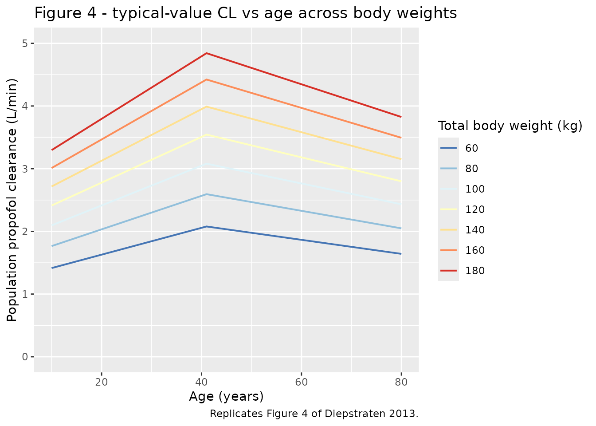
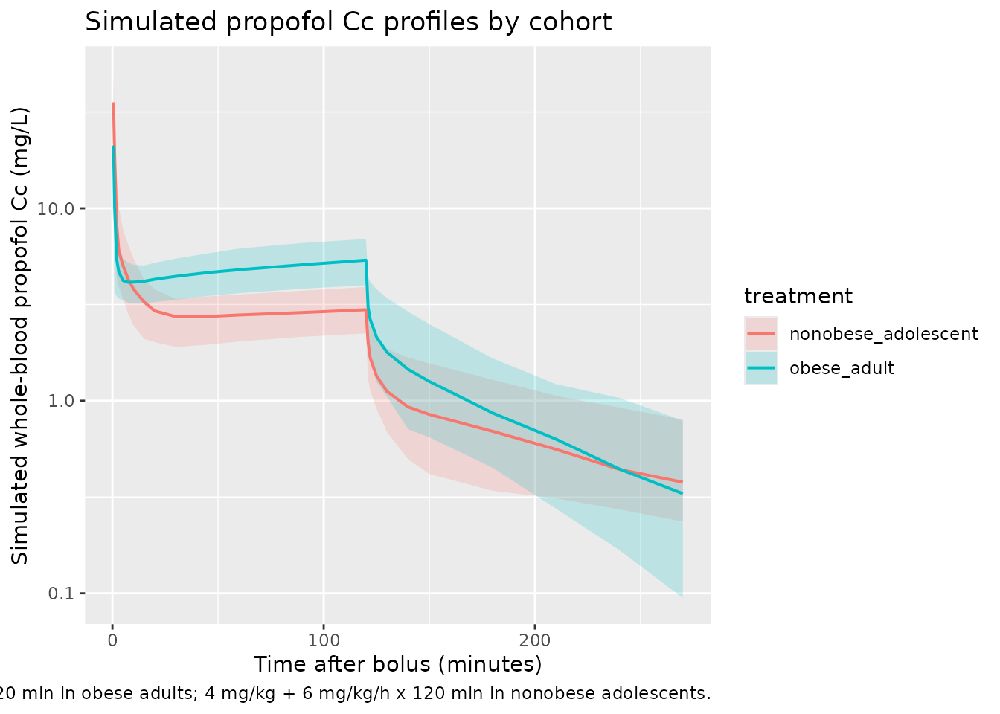
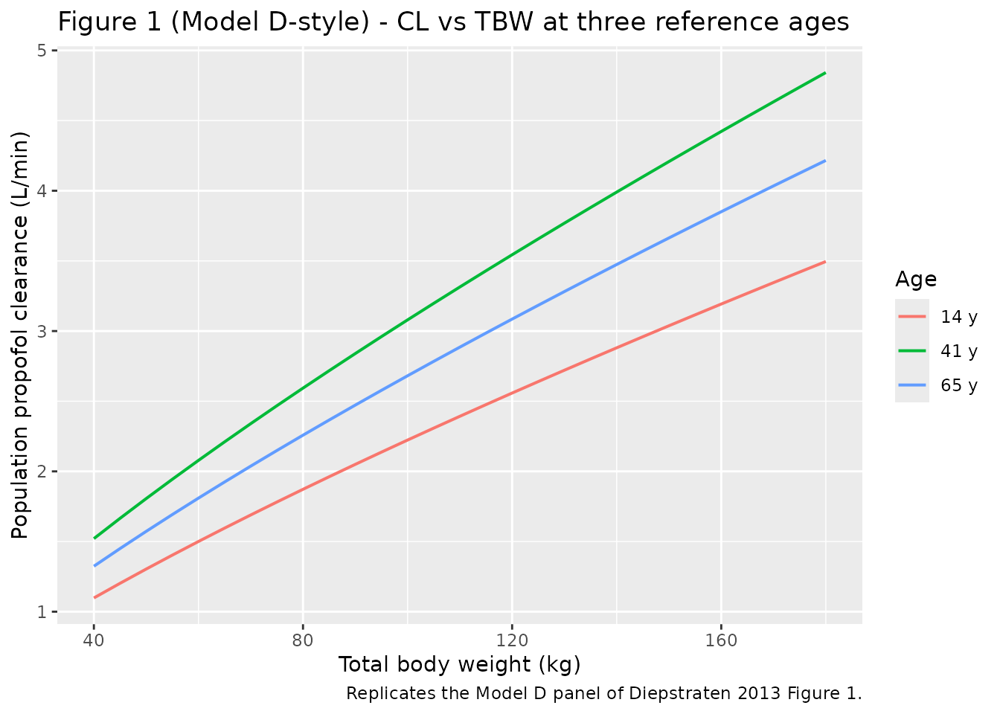

Propofol (Diepstraten 2013)
Source:vignettes/articles/Diepstraten_2013_propofol.Rmd
Diepstraten_2013_propofol.RmdModel and source
- Citation: Diepstraten J, Chidambaran V, Sadhasivam S, Blusse van Oud-Alblas HJ, Inge T, van Ramshorst B, van Dongen EPA, Vinks AA, Knibbe CAJ. (2013). An integrated population pharmacokinetic meta-analysis of propofol in morbidly obese and nonobese adults, adolescents, and children. CPT: Pharmacometrics & Systems Pharmacology 2:e73. doi:10.1038/psp.2013.47.
- Description: Three-compartment intravenous population PK model for propofol in morbidly obese and nonobese adults, adolescents, and children (Diepstraten 2013 meta-analysis of five previously published studies; N = 94 patients, TBW 37-184 kg, age 9-79 years). Final model E in Table 3: total body weight scales clearance allometrically with an estimated exponent and scales the slow inter-compartmental clearance Q3 linearly; age modifies clearance via a bilinear function centered at 41 years with separate slopes below and above the breakpoint. Inter-individual variability on CL, V1, V3, and Q3 (log-normal) and proportional intra-individual error on log-transformed concentrations.
- Article: CPT: Pharmacometrics & Systems Pharmacology 2013;2:e73
Diepstraten et al. (2013) pooled five previously published propofol pharmacokinetic studies in morbidly obese and nonobese adults, adolescents, and children, and fit a three-compartment intravenous PK model in NONMEM VI (ADVAN11 / TRANS4) on log-transformed whole-blood propofol concentrations. The published “Final model E” (Table 3) is the structural model packaged here.
Population
The pooled cohort comprised 94 patients contributing 1,652 whole-blood propofol concentration measurements. Cohorts (Diepstraten 2013 Table 1):
- 20 morbidly obese adults scheduled for bariatric surgery (mean TBW 124 kg, range 98-167 kg; mean age 45 years).
- 40 nonobese adults (mean TBW 74 kg, range 55-98 kg; mean age 55 years): 24 elective general-surgery patients receiving a bolus induction dose plus isoflurane maintenance, and 20 ICU patients receiving 2-5 days of continuous propofol sedation.
- 20 morbidly obese adolescents and children scheduled for bariatric surgery (mean TBW 125 kg, range 70-184 kg; mean age 16 years).
- 14 nonobese adolescents undergoing scoliosis surgery (mean TBW 54 kg, range 37-82 kg; mean age 14 years).
Overall total body weight ranged 37-184 kg and age 9-79 years (sex
split 30 M / 64 F = 32% / 68% female). The same demographic block is
available programmatically via
readModelDb("Diepstraten_2013_propofol")$population.
Source trace
The per-parameter origin is recorded as an in-file comment next to
each ini() entry in
inst/modeldb/specificDrugs/Diepstraten_2013_propofol.R.
This table collects them in one place.
| Equation / parameter | Value | Source location |
|---|---|---|
lcl = log(2.34) |
CL,70 kg,41 y = 2.34 L/min | Diepstraten 2013 Table 3 final model |
lvc = log(3.17) |
V1 = 3.17 L | Diepstraten 2013 Table 3 final model |
lq = log(1.60) |
Q2 = 1.60 L/min | Diepstraten 2013 Table 3 final model |
lvp = log(5.89) |
V2 = 5.89 L | Diepstraten 2013 Table 3 final model |
lq2 = log(1.50) |
Q3,70 kg = 1.50 L/min | Diepstraten 2013 Table 3 final model |
lvp2 = log(116) |
V3 = 116 L | Diepstraten 2013 Table 3 final model |
e_wt_cl = 0.77 |
TBW allometric exponent on CL (estimated, not fixed) | Diepstraten 2013 Table 3 final model |
e_age_le41 = 0.0103 |
Bilinear age slope on CL for AGE <= 41 y | Diepstraten 2013 Table 3 final model |
e_age_gt41 = -0.00539 |
Bilinear age slope on CL for AGE > 41 y | Diepstraten 2013 Table 3 final model |
etalcl = 0.030171 |
IIV CL = 17.5 % CV (log-normal variance) | Diepstraten 2013 Table 3 final model |
etalvc = 0.228065 |
IIV V1 = 50.6 % CV | Diepstraten 2013 Table 3 final model |
etalvp2 = 0.123131 |
IIV V3 = 36.2 % CV | Diepstraten 2013 Table 3 final model |
etalq2 = 0.151250 |
IIV Q3 = 40.4 % CV | Diepstraten 2013 Table 3 final model |
propSd = 0.243 |
Proportional intra-individual error 24.3 % | Diepstraten 2013 Table 3 final model |
| CL covariate equation | CL_i = CL_70,41 * (TBW/70)^0.77 * Fage |
Diepstraten 2013 Eq. 1 |
| Q3 covariate equation | Q3_i = Q3_70 * (TBW/70) |
Diepstraten 2013 Table 2 footnote c |
| Bilinear age factor |
Fage = 1 + b*(AGE-41) for AGE <= 41;
1 + c*(AGE-41) for AGE > 41 |
Diepstraten 2013 Eq. 1 / Methods Eq. 5 |
| Three-compartment ODE | NONMEM ADVAN11 / TRANS4 mass-balance | Diepstraten 2013 Methods, “Pharmacokinetic model” |
Virtual cohort
The original observed data are not publicly available. Two virtual cohorts are constructed below to exercise the model across the published TBW / age ranges: a “morbidly obese adult” cohort dosed with a 200 mg bolus followed by a 10 mg/kg/h maintenance infusion (Diepstraten 2013 Methods, “Morbidly obese adults”), and a “nonobese adolescent” cohort dosed with a 4 mg/kg bolus followed by a 6 mg/kg/h maintenance infusion (Diepstraten 2013 Methods, “Nonobese children and adolescents”). All times are in minutes.
set.seed(20260511)
make_cohort <- function(n, wt_mean, wt_sd, age_mean, age_sd,
bolus_mg_per_kg, bolus_mg_fixed = NA_real_,
infusion_mg_per_kg_per_h,
infusion_duration_min,
obs_end_min = 360,
treatment_label,
id_offset = 0L) {
per_subject <- tibble::tibble(
id = id_offset + seq_len(n),
WT = pmax(20, rnorm(n, wt_mean, wt_sd)),
AGE = pmax(9, rnorm(n, age_mean, age_sd)),
treatment = treatment_label
) |>
dplyr::mutate(
bolus_amt = ifelse(is.na(bolus_mg_fixed),
bolus_mg_per_kg * WT,
bolus_mg_fixed),
infusion_rate_mg_per_min = infusion_mg_per_kg_per_h * WT / 60
)
# Three rows per subject:
# evid 1 amt = bolus_amt at time 0 (instantaneous bolus into central)
# evid 1 amt = infusion_amt rate = infusion_rate at time 0 (continuous infusion)
# evid 0 sampling grid
bolus_rows <- per_subject |>
dplyr::transmute(id, time = 0, evid = 1L, cmt = "central",
amt = bolus_amt, rate = 0, WT, AGE, treatment)
infusion_rows <- per_subject |>
dplyr::transmute(
id, time = 0, evid = 1L, cmt = "central",
amt = infusion_rate_mg_per_min * infusion_duration_min,
rate = infusion_rate_mg_per_min,
WT, AGE, treatment
)
obs_grid <- c(0.5, 1, 2, 3, 5, 7.5, 10, 15, 20, 30, 45, 60, 90, 120,
infusion_duration_min,
infusion_duration_min + c(1, 2, 5, 10, 20, 30, 60, 90, 120, 150))
obs_grid <- sort(unique(obs_grid[obs_grid <= obs_end_min]))
obs_rows <- per_subject |>
tidyr::expand_grid(time = obs_grid) |>
dplyr::transmute(id, time, evid = 0L, cmt = "central",
amt = 0, rate = 0, WT, AGE, treatment)
dplyr::bind_rows(bolus_rows, infusion_rows, obs_rows) |>
dplyr::arrange(id, time, dplyr::desc(evid))
}
events <- dplyr::bind_rows(
make_cohort(
n = 40,
wt_mean = 124, wt_sd = 20,
age_mean = 45, age_sd = 12,
bolus_mg_fixed = 200,
bolus_mg_per_kg = NA_real_,
infusion_mg_per_kg_per_h = 10,
infusion_duration_min = 120,
obs_end_min = 360,
treatment_label = "obese_adult",
id_offset = 0L
),
make_cohort(
n = 40,
wt_mean = 54, wt_sd = 13,
age_mean = 14, age_sd = 3,
bolus_mg_per_kg = 4,
infusion_mg_per_kg_per_h = 6,
infusion_duration_min = 120,
obs_end_min = 360,
treatment_label = "nonobese_adolescent",
id_offset = 1000L
)
)
stopifnot(!anyDuplicated(unique(events[, c("id", "time", "evid")])))Simulation
mod <- readModelDb("Diepstraten_2013_propofol")
sim <- rxode2::rxSolve(
mod,
events = events,
keep = c("treatment", "WT", "AGE")
) |>
as.data.frame() |>
tibble::as_tibble()
#> ℹ parameter labels from comments will be replaced by 'label()'Replicate published figures
Figure 4 - typical-value propofol clearance vs age across body weights
Diepstraten 2013 Figure 4 plots population (typical-value) propofol
clearance versus age for several total body weights using the final
model. Because Figure 4 is a deterministic prediction from the
structural model with no inter-individual variability, it is recovered
exactly by evaluating Equation 1 of the paper at the relevant
(WT, AGE) grid. The model file’s parameter values reproduce
that prediction.
cl_pop <- 2.34 # L/min; Diepstraten 2013 Table 3
z_pop <- 0.77 # Table 3
b_pop <- 0.0103
c_pop <- -0.00539
wt_grid <- c(60, 80, 100, 120, 140, 160, 180)
age_grid <- seq(10, 80, by = 1)
fig4_df <- tidyr::expand_grid(WT = wt_grid, AGE = age_grid) |>
dplyr::mutate(
fage = ifelse(AGE <= 41,
1 + b_pop * (AGE - 41),
1 + c_pop * (AGE - 41)),
CL_pop_Lmin = cl_pop * (WT / 70)^z_pop * fage
)
ggplot(fig4_df, aes(AGE, CL_pop_Lmin, colour = factor(WT))) +
geom_line(linewidth = 0.7) +
scale_colour_brewer(palette = "RdYlBu", direction = -1,
name = "Total body weight (kg)") +
labs(x = "Age (years)",
y = "Population propofol clearance (L/min)",
title = "Figure 4 - typical-value CL vs age across body weights",
caption = "Replicates Figure 4 of Diepstraten 2013.") +
coord_cartesian(ylim = c(0, 5))
Whole-blood concentration-time profiles by cohort
sim |>
dplyr::filter(time > 0) |>
dplyr::group_by(time, treatment) |>
dplyr::summarise(
Q05 = quantile(Cc, 0.05, na.rm = TRUE),
Q50 = quantile(Cc, 0.50, na.rm = TRUE),
Q95 = quantile(Cc, 0.95, na.rm = TRUE),
.groups = "drop"
) |>
ggplot(aes(time, Q50, colour = treatment, fill = treatment)) +
geom_ribbon(aes(ymin = Q05, ymax = Q95), alpha = 0.20, colour = NA) +
geom_line(linewidth = 0.7) +
scale_y_log10() +
labs(x = "Time after bolus (minutes)",
y = "Simulated whole-blood propofol Cc (mg/L)",
title = "Simulated propofol Cc profiles by cohort",
caption = "200 mg bolus + 10 mg/kg/h x 120 min in obese adults; 4 mg/kg + 6 mg/kg/h x 120 min in nonobese adolescents.")
Typical-value clearance comparison: obese adults vs nonobese adolescents at the same TBW
Diepstraten 2013 Figure 1 (Model C panel) highlights that morbidly obese adolescents at the same TBW have lower typical clearance than morbidly obese adults. The model reproduces this difference through the bilinear age factor.
fig1_df <- tidyr::expand_grid(
WT = seq(40, 180, by = 5),
AGE = c(14, 41, 65)
) |>
dplyr::mutate(
fage = ifelse(AGE <= 41,
1 + b_pop * (AGE - 41),
1 + c_pop * (AGE - 41)),
CL_pop_Lmin = cl_pop * (WT / 70)^z_pop * fage,
Age_label = factor(paste0(AGE, " y"), levels = paste0(c(14, 41, 65), " y"))
)
ggplot(fig1_df, aes(WT, CL_pop_Lmin, colour = Age_label)) +
geom_line(linewidth = 0.7) +
labs(x = "Total body weight (kg)",
y = "Population propofol clearance (L/min)",
colour = "Age",
title = "Figure 1 (Model D-style) - CL vs TBW at three reference ages",
caption = "Replicates the Model D panel of Diepstraten 2013 Figure 1.")
PKNCA validation
Diepstraten 2013 does not report NCA parameters (Cmax / AUC / half-life) by study cohort, so this section only computes simulated NCA values per cohort as a sanity check on the implementation. The values should fall within the range expected for IV propofol whole-blood concentrations (~1-10 mg/L during maintenance infusion; AUC scales with infusion duration and dose).
sim_nca <- sim |>
dplyr::filter(!is.na(Cc), time > 0) |>
dplyr::select(id, time, Cc, treatment)
dose_df <- events |>
dplyr::filter(evid == 1) |>
dplyr::group_by(id, treatment) |>
dplyr::summarise(time = min(time), amt = sum(amt), .groups = "drop")
conc_obj <- PKNCA::PKNCAconc(
sim_nca,
Cc ~ time | treatment + id,
concu = "mg/L",
timeu = "min"
)
dose_obj <- PKNCA::PKNCAdose(
dose_df,
amt ~ time | treatment + id,
doseu = "mg"
)
intervals <- data.frame(
start = 0,
end = Inf,
cmax = TRUE,
tmax = TRUE,
aucinf.obs = TRUE,
half.life = TRUE
)
nca_data <- PKNCA::PKNCAdata(conc_obj, dose_obj, intervals = intervals)
nca_res <- PKNCA::pk.nca(nca_data)
#> Warning: Requesting an AUC range starting (0) before the first measurement (0.5) is not allowed
#> Requesting an AUC range starting (0) before the first measurement (0.5) is not allowed
#> Requesting an AUC range starting (0) before the first measurement (0.5) is not allowed
#> Requesting an AUC range starting (0) before the first measurement (0.5) is not allowed
#> Requesting an AUC range starting (0) before the first measurement (0.5) is not allowed
#> Requesting an AUC range starting (0) before the first measurement (0.5) is not allowed
#> Requesting an AUC range starting (0) before the first measurement (0.5) is not allowed
#> Requesting an AUC range starting (0) before the first measurement (0.5) is not allowed
#> Requesting an AUC range starting (0) before the first measurement (0.5) is not allowed
#> Requesting an AUC range starting (0) before the first measurement (0.5) is not allowed
#> Requesting an AUC range starting (0) before the first measurement (0.5) is not allowed
#> Requesting an AUC range starting (0) before the first measurement (0.5) is not allowed
#> Requesting an AUC range starting (0) before the first measurement (0.5) is not allowed
#> Requesting an AUC range starting (0) before the first measurement (0.5) is not allowed
#> Requesting an AUC range starting (0) before the first measurement (0.5) is not allowed
#> Requesting an AUC range starting (0) before the first measurement (0.5) is not allowed
#> Requesting an AUC range starting (0) before the first measurement (0.5) is not allowed
#> Requesting an AUC range starting (0) before the first measurement (0.5) is not allowed
#> Requesting an AUC range starting (0) before the first measurement (0.5) is not allowed
#> Requesting an AUC range starting (0) before the first measurement (0.5) is not allowed
#> Requesting an AUC range starting (0) before the first measurement (0.5) is not allowed
#> Requesting an AUC range starting (0) before the first measurement (0.5) is not allowed
#> Requesting an AUC range starting (0) before the first measurement (0.5) is not allowed
#> Requesting an AUC range starting (0) before the first measurement (0.5) is not allowed
#> Requesting an AUC range starting (0) before the first measurement (0.5) is not allowed
#> Requesting an AUC range starting (0) before the first measurement (0.5) is not allowed
#> Requesting an AUC range starting (0) before the first measurement (0.5) is not allowed
#> Requesting an AUC range starting (0) before the first measurement (0.5) is not allowed
#> Requesting an AUC range starting (0) before the first measurement (0.5) is not allowed
#> Requesting an AUC range starting (0) before the first measurement (0.5) is not allowed
#> Requesting an AUC range starting (0) before the first measurement (0.5) is not allowed
#> Requesting an AUC range starting (0) before the first measurement (0.5) is not allowed
#> Requesting an AUC range starting (0) before the first measurement (0.5) is not allowed
#> Requesting an AUC range starting (0) before the first measurement (0.5) is not allowed
#> Requesting an AUC range starting (0) before the first measurement (0.5) is not allowed
#> Requesting an AUC range starting (0) before the first measurement (0.5) is not allowed
#> Requesting an AUC range starting (0) before the first measurement (0.5) is not allowed
#> Requesting an AUC range starting (0) before the first measurement (0.5) is not allowed
#> Requesting an AUC range starting (0) before the first measurement (0.5) is not allowed
#> Requesting an AUC range starting (0) before the first measurement (0.5) is not allowed
#> Requesting an AUC range starting (0) before the first measurement (0.5) is not allowed
#> Requesting an AUC range starting (0) before the first measurement (0.5) is not allowed
#> Requesting an AUC range starting (0) before the first measurement (0.5) is not allowed
#> Requesting an AUC range starting (0) before the first measurement (0.5) is not allowed
#> Requesting an AUC range starting (0) before the first measurement (0.5) is not allowed
#> Requesting an AUC range starting (0) before the first measurement (0.5) is not allowed
#> Requesting an AUC range starting (0) before the first measurement (0.5) is not allowed
#> Requesting an AUC range starting (0) before the first measurement (0.5) is not allowed
#> Requesting an AUC range starting (0) before the first measurement (0.5) is not allowed
#> Requesting an AUC range starting (0) before the first measurement (0.5) is not allowed
#> Requesting an AUC range starting (0) before the first measurement (0.5) is not allowed
#> Requesting an AUC range starting (0) before the first measurement (0.5) is not allowed
#> Requesting an AUC range starting (0) before the first measurement (0.5) is not allowed
#> Requesting an AUC range starting (0) before the first measurement (0.5) is not allowed
#> Requesting an AUC range starting (0) before the first measurement (0.5) is not allowed
#> Requesting an AUC range starting (0) before the first measurement (0.5) is not allowed
#> Requesting an AUC range starting (0) before the first measurement (0.5) is not allowed
#> Requesting an AUC range starting (0) before the first measurement (0.5) is not allowed
#> Requesting an AUC range starting (0) before the first measurement (0.5) is not allowed
#> Requesting an AUC range starting (0) before the first measurement (0.5) is not allowed
#> Requesting an AUC range starting (0) before the first measurement (0.5) is not allowed
#> Requesting an AUC range starting (0) before the first measurement (0.5) is not allowed
#> Requesting an AUC range starting (0) before the first measurement (0.5) is not allowed
#> Requesting an AUC range starting (0) before the first measurement (0.5) is not allowed
#> Requesting an AUC range starting (0) before the first measurement (0.5) is not allowed
#> Requesting an AUC range starting (0) before the first measurement (0.5) is not allowed
#> Requesting an AUC range starting (0) before the first measurement (0.5) is not allowed
#> Requesting an AUC range starting (0) before the first measurement (0.5) is not allowed
#> Requesting an AUC range starting (0) before the first measurement (0.5) is not allowed
#> Requesting an AUC range starting (0) before the first measurement (0.5) is not allowed
#> Requesting an AUC range starting (0) before the first measurement (0.5) is not allowed
#> Requesting an AUC range starting (0) before the first measurement (0.5) is not allowed
#> Requesting an AUC range starting (0) before the first measurement (0.5) is not allowed
#> Requesting an AUC range starting (0) before the first measurement (0.5) is not allowed
#> Requesting an AUC range starting (0) before the first measurement (0.5) is not allowed
#> Requesting an AUC range starting (0) before the first measurement (0.5) is not allowed
#> Requesting an AUC range starting (0) before the first measurement (0.5) is not allowed
#> Requesting an AUC range starting (0) before the first measurement (0.5) is not allowed
#> Requesting an AUC range starting (0) before the first measurement (0.5) is not allowed
#> Requesting an AUC range starting (0) before the first measurement (0.5) is not allowed
nca_summary <- summary(nca_res)
knitr::kable(
nca_summary,
caption = "Simulated propofol NCA parameters by cohort (no per-cohort published reference)."
)| Interval Start | Interval End | treatment | N | Cmax (mg/L) | Tmax (min) | Half-life (min) | AUCinf,obs (min*mg/L) |
|---|---|---|---|---|---|---|---|
| 0 | Inf | nonobese_adolescent | 40 | 33.2 [25.5] | 0.500 [0.500, 0.500] | 143 [70.5] | NC |
| 0 | Inf | obese_adult | 40 | 19.4 [29.7] | 0.500 [0.500, 120] | 61.6 [23.0] | NC |
Assumptions and deviations
- IIV variances were back-calculated from the reported CV% via the
exact log-normal mapping
omega^2 = log(CV^2 + 1). The paper does not state whether its IIV(%) entries are thesqrt(omega^2) * 100approximation or the exact log-normal CV; this assumption follows the convention used by sibling models in nlmixr2lib (e.g.,Aregbe_2012_alvespimycin,Hennig_2013_tobra). - Diepstraten 2013 fits the residual error as additive on
log-transformed concentrations:
Y = log(c_pred) + epsilon,epsilon ~ N(0, sigma^2), with sigma = 0.243. This is carried over here as a proportional residual error on the linear concentration scale (propSd = 0.243); the two parameterizations are equivalent for small errors and identical to first order in epsilon. - Inter-individual variability was reported only on CL, V1, V3, and Q3
(the four parameters whose
IIV (%)rows are populated in Table 3); no IIV on V2 or Q2 is reported, so the corresponding etas are omitted from the model file. - Race / ethnicity, sex, and other demographic descriptors were not retained as covariates in Diepstraten 2013 final model E (only TBW and age survived covariate selection). The virtual cohorts here therefore vary only TBW and AGE.
- The simulated regimens follow the source paper’s Methods narrative but are generic representatives chosen to exercise the published TBW / age ranges; the original individual-patient dosing records are not public.
- Whole-blood propofol concentrations were the response variable in
Diepstraten 2013 (Methods, “Pharmacokinetic model”), so simulated
Ccvalues are whole-blood concentrations, not plasma. The blood-to-plasma ratio of propofol is approximately 1 in adult human, so the distinction is small in practice but worth flagging when comparing against external plasma-PK studies.